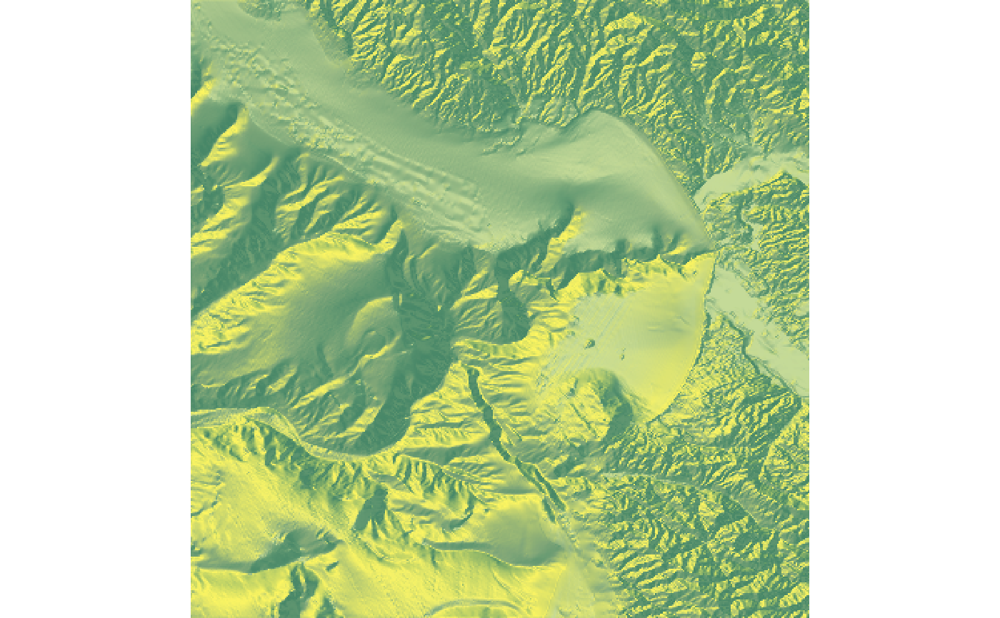
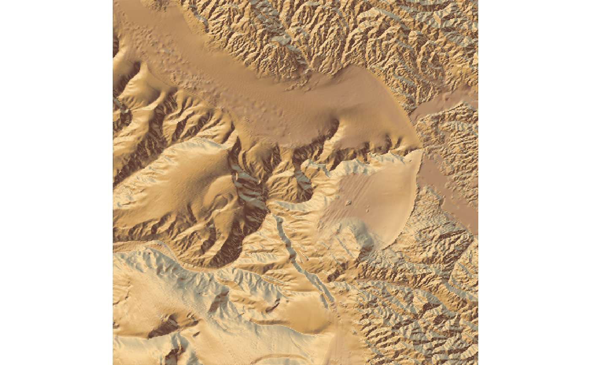
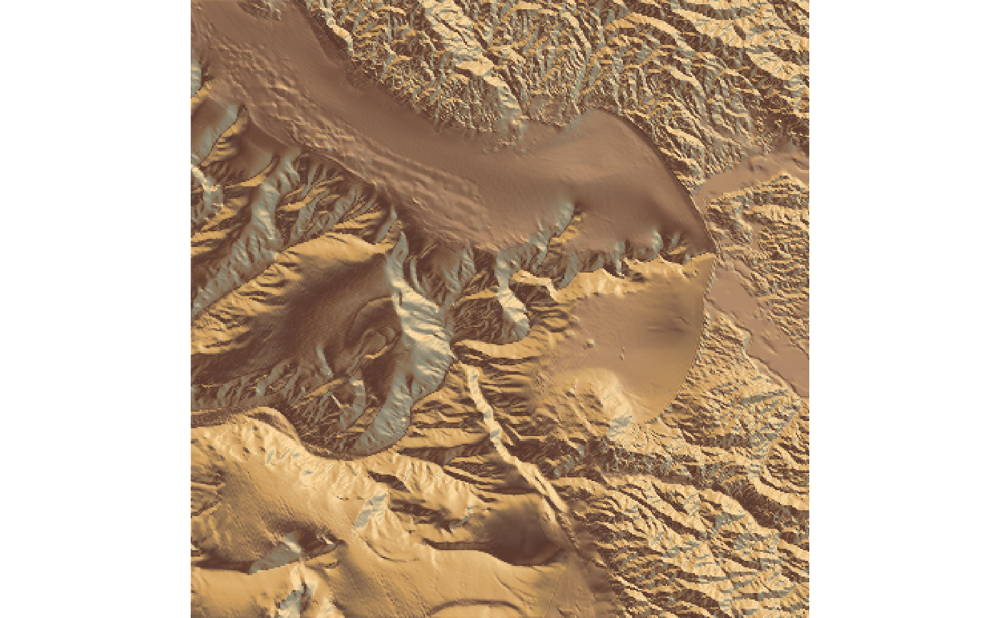
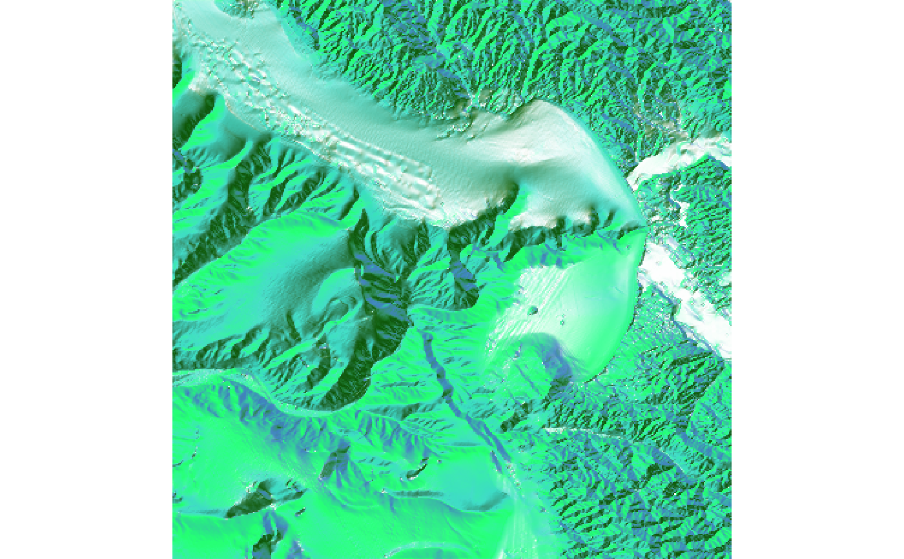

Calculates a color for each point on the surface using the surface normals and hemispherical UV mapping. This uses either a texture map provided by the user (as an RGB array), or a built-in color texture.
sphere_shade(heightmap, sunangle = 315, texture = "imhof1", normalvectors = NULL, zscale = 1, progbar = interactive())
| heightmap | A two-dimensional matrix, where each entry in the matrix is the elevation at that point. All points are assumed to be evenly spaced. |
|---|---|
| sunangle | Default `315` (NW). The direction of the main highlight color (derived from the built-in palettes or the `create_texture` function). |
| texture | Default `imhof1`. Either a square matrix indicating the spherical texture mapping, or a string indicating one of the built-in palettes (`imhof1`,`imhof2`,`imhof3`,`imhof4`,`desert`, `bw`, and `unicorn`). |
| normalvectors | Default `NULL`. Cache of the normal vectors (from `calculate_normal` function). Supply this to speed up texture mapping. |
| zscale | Default `1`. The ratio between the x and y spacing (which are assumed to be equal) and the z axis. |
| progbar | Default `TRUE` if interactive, `FALSE` otherwise. If `FALSE`, turns off progress bar. |
RGB array of hillshaded texture mappings.
#Change the highlight angle: montereybay %>% sphere_shade(texture="desert", sunangle = 45) %>% plot_map()#Create our own texture using the `create_texture` function: montereybay %>% sphere_shade(texture=create_texture("springgreen","darkgreen", "turquoise","steelblue3","white")) %>% plot_map()